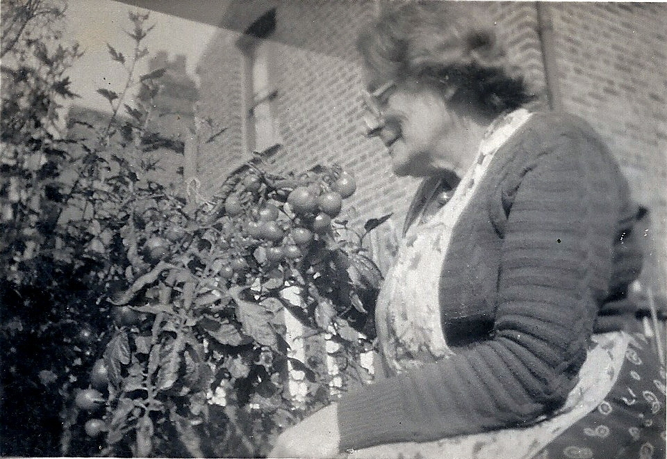

Eliza Mary Standing (née Parr) 1885 - 1969
[ Home ] | [ Calendar ] | [ Surnames Index ] | [ Errors ] | [ Family History ]Eliza Parr, the wife of William Ernest Standing (the third cousin twice-removed on the father's side of Nigel Horne), was born in Stepney, London, England on 19 May 18851,2, was baptised in Limehouse, London, England on 17 Jun 1885 and married William (a laundry man with whom she had 7 children: Victor William, Ernest Douglas, Stephen Earling, Muriel Alice, Stephen Lawrence, Bernard Walter and Brenda Margaret) in Ilford, London, England on 29 Aug 19143.
During her life, she was living at 5 Aurelia Cottages, Ley Street in Ilford in 19254 and on 29 Sept 1939.
She died on 23 Jul 1969 in Ilford2 and was buried there at Barkingside Garden of Rest, Longwood Gardens after 23 Jul 1969.
Children
- Victor William was born on 10 May 1915
- Ernest Douglas was born on 10 Feb 1917
- Stephen Earling was born in 1921
- Muriel Alice was born c. Aug 1921
- Stephen Lawrence was born c. May 1923
- Bernard Walter was born on 7 Sept 1925
- Brenda Margaret was born on 9 Jan 1927
Citations
- England & Wales deaths 1837-2007 - Findmypast
- England & Wales, Death Index: 1984-2005 Online publication - Provo, UT, USA: The Generations Network, Inc., 2007.Original data - General Register Office. England and Wales Civil Registration Indexes. London, England: General Register Office. © Crown copyright. Published by permission of the Cont
- England & Wales, FreeBMD Marriage Index: 1837-1915 Online publication - Provo, UT, USA: The Generations Network, Inc., 2006.Original data - General Register Office. England and Wales Civil Registration Indexes. London, England: General Register Office. © Crown copyright. Published by permission of the Cont
- From the birth certificate of her son, Bernard
Media
Eliza Mary Parr

Eliza Mary Parr
William Standing - Eliza Parr

William Standing - Eliza Parr - gravestone

Eliza Mary Parr (2)
Eliza Mary Parr - baptism
1939 Register Transcription - TNA-R39-1088-1088B-002-28
England & Wales deaths 1837-2007 - BMD/D/1969/3/AZ/001009/083
England & Wales marriages 1837-2008 - BMD/M/1914/3/AZ/000923/121
England & Wales births 1837-2006 - BMD/B/1885/2/AZ/000432/057
Family Tree

Map
Generated by ged2site. Last updated on Jul 3, 2024
Known Issues
Burial place (Ilford, London, England) has no citations
Baptism information not used to determine a parent
Residence record for 29 Sep 1939 contains no citation
No records of living with anyone
Adding date of burial as 'aft 23 Jul 1969'